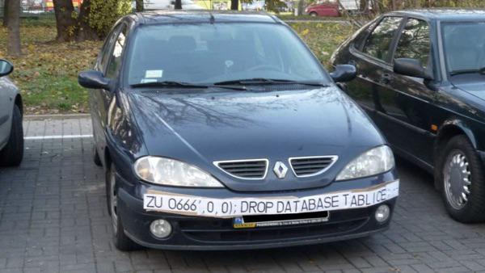
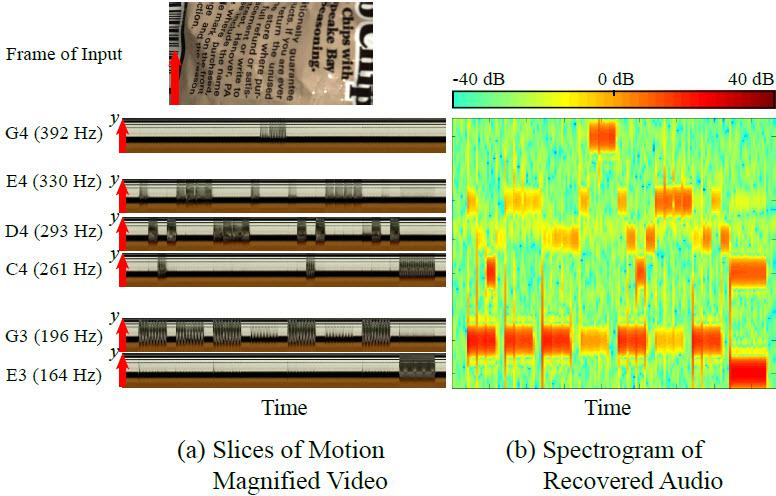
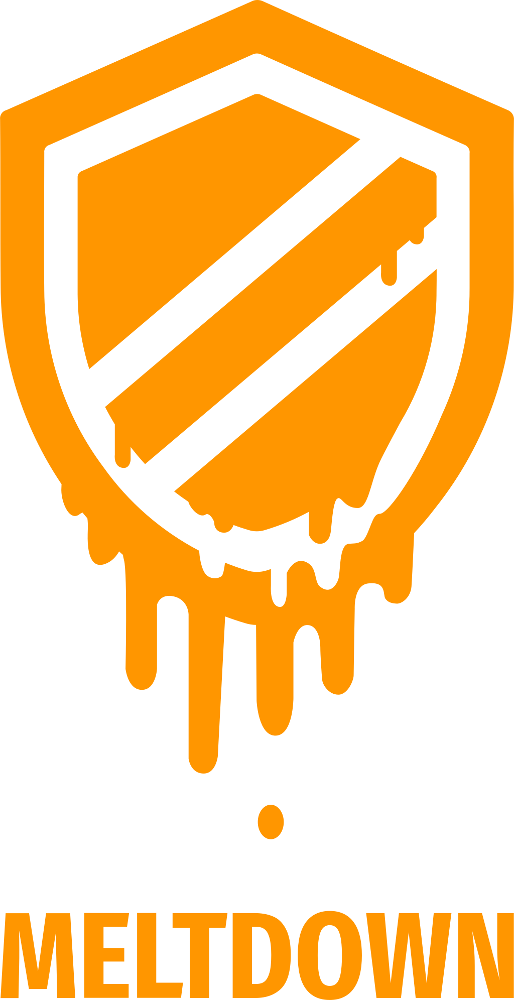
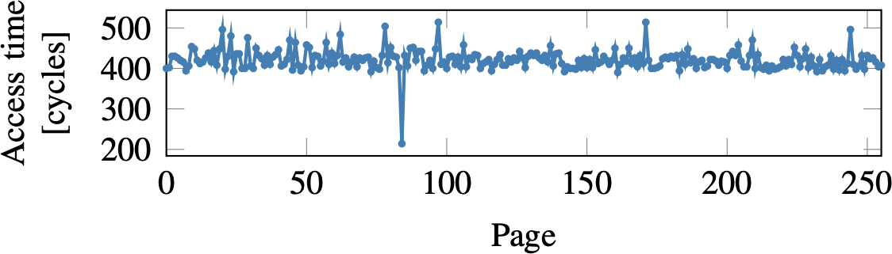
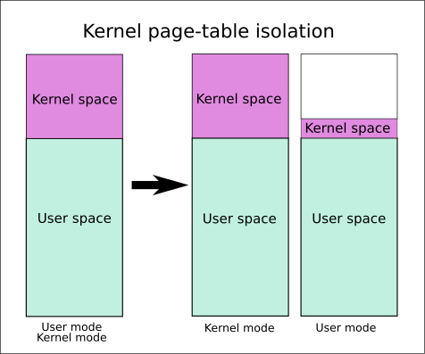

public: True class: center, middle # 操作系统安全 蒋炎岩 <jyy@nju.edu.cn> 南京大学计算机软件研究所 --- # 本讲概述 > 操作系统：应用程序不能直接访问操作系统中的对象 > * 硬件(存储保护)保证访问.red[任何]操作系统内核数据都会异常 > > 黑客： > > * 我一定要偷出数据来！ ---- * 操作系统安全 * Bug和安全漏洞 * 侧信道攻击 --- class: center, middle # 操作系统安全 --- # 操作系统安全 安全：Confidentiality, Availability, Integrity * 别人无法看到我不想让他看到的东西 * 别人无法阻止我做我能做得事 (对应DoS attacks) * 别人无法恶意破坏我拥有的东西 ---- 操作系统安全：操作系统对象访问的安全 --- # 你常见的安全措施 * 正确配置访问控制策略 * 比如现在一般默认禁止root密码登录 (否则……嘿嘿嘿) * 及时安装安全补丁 * 堵上已知的安全漏洞 * 使用网络防火墙阻止非预期的访问 * 防止别人利用安全漏洞 --- class: center, middle # 导致安全问题的Bugs --- # 不小心程序有Bug？ 那可成了.red[黑客攻击的把柄] * Windows在很长一段时间安全性很差 * 充斥着各种bugs * 更新不及时 * 国内盗版软件泛滥 ---- “随便扫一扫，都能搞到一堆肉鸡” --- # 一张图看懂注入攻击 ```c char *query = asprintf("UPDATE...'%s', 0, 0)", ocr_result); if (query) SQL_execute(query); ``` .center[] --- # 不好好处理输入？ 我们是友善的，世界是恶意的 ```text $ ./httpd –p 8000 /var/www > Listening 0.0.0.0:8000 > GET / > 200 OK -> /var/www/index.html > GET ../../etc/passwd > 200 OK -> /etc/passwd # 泄露 ``` -- count: false ---- * 教务系统 * 缺课`-99999999`次，所有同学从选课列表中消失 -- count: false * 宿舍楼下打印机 * 打印`-1`页，校园卡上多出1页的钱 (???) --- # 不好好处理输入？ libpng：显示png图片的开源库 * chrome/safari等都使用libpng显示网络上的PNG图片 * 坏人：上传一个<del>种图</del>恶意图片 * 你：我反正就看看，不输密码(信任浏览器是安全的) * 坏人：浏览器里存储的密码已到手 > Heap-based buffer overflow in the png_combine_row function in libpng before 1.5.21 and 1.6.x before 1.6.16, when running on 64-bit systems, might allow context-dependent attackers to execute arbitrary code via a "very wide interlaced" PNG image. > > (CVE-2014-9495, CVE = Common Vulnerabilities & Exposures) --- # Undefined Behaviors UB是安全漏洞的一个重要来源 * “UB”的意思就是“我什么都不管了啊，电脑炸了都行啊” ---- 常见UB * buffer overflow ([return-oriented-programming, ROP](https://en.wikipedia.org/wiki/Return-oriented_programming)) * 劫持堆栈，包括控制流和数据 * use after free/dangling pointer * 劫持堆区的数据 * data race * TOCTTOU --- class: center, middle # Availability：DoS攻击 --- # 大力出奇迹 “botnet” (僵尸网络): a network of private computers infected with malicious software and controlled as a group without theowners' knowledge, e.g., to send spam messages. * 用一系列漏洞获得权限的“肉鸡”从全世界对互联网上的服务进行轰炸，distributed denial of service (DDoS) ---- 同一个机器上的用户被入侵后也可能影响其他用户 * fork bomb * 虚拟化环境下影响系统中的其他虚拟机 --- # Algorithmic DoS > SA Crosby and DS Wallach. [Denial of service via algorithmic complexity attacks](https://www.usenix.org/node/152415). In *Proc. of USENIX Security*, 2003. 很多算法都有很好的average case，但worst case比较糟糕 * Hash table/binary search tree: <math>O(1)</math> 期望；<math>O(n)</math> 最坏 * 给apache httpd一个所有key都hash到同一个bucket的HTTP POST = DoS * 正则表达式：<math>O(n^c)</math> 期望；<math>O(2^n)</math> 最坏 * 嘿嘿嘿 --- class: center, middle # Confidentiality：侧信道攻击 --- # 侧信道 (Side-Channel) > A [side-channel attack](https://en.wikipedia.org/wiki/Side-channel_attack) is any attack based on information gained from the implementation of a computer system, rather than weaknesses in the implemented algorithm itself. 常见的侧信道： * 时间 * 能源消耗 * 电磁信号 * (一切以非算法形式泄露的信息) --- # Visual Microphone 算法再安全，我在计算机外面偷窥不行吗？ > A Davis, et al. The visual microphone: Passive recovery of sound from video. In *Proc. of SIGGRAPH*, 2014. <center></center> --- # 黑客：如何偷出1bit信息？ 更合理的方案：时间差 ```c void steal_one_bit() { t1 = rdtsc(); something(); t2 = rdtsc(); if (t2 - t1 > THRESHOLD) { // 分支是1bit信息！ } else { } } ``` --- # 操作系统：校验密码 (Tanenbaum教科书上的例子) * 人畜无害，看起来太正确了 ```c // 运行在内核空间 int kernel_auth(const char *user_buf) { const char *passwd = get_password(); int len = strlen(passwd); for (int i = 0; i < len; i++) { if (user_buf[i] != passwd[i]) { return AUTH_FAIL; } } return AUTH_SUCC; } ``` --- # 如何偷出1bit信息？ ```c int try(char *guess, int ncorrect) { char *pg = page_alloc(2); char *ptr = pg + PG_SIZE - ncorrect - 1; strcpy(guess, ptr); // do some magic things t1 = rdtsc(); auth(ptr); t2 = rdtsc(); if (t2 - t1 > THRESHOLD) { // BOOM! } page_free(pg); } ``` --- # Meltdown .float-right[] > Lipp, et al. Meltdown: Reading kernel memory from user space, 2018. 一夜之间爆炸 * 影响Intel几乎所有处理器和ARM Cortex-A75 * AMD顺势吹响反攻的号角 -- count: false ---- 如何偷出1bit信息？ ```c uint8_t data = *(kernel_addr); // exception access(probe_array[data * 4096]); ``` 然后检查`probe_array[ch * 4096]`的访问速度；最快的那个就是偷出的字节！ --- # 发生了什么？ ```c uint8_t data = *(kernel_addr); // exception access(probe_array[data * 4096]); ``` ---- 原则上.red[access不会被执行]，但处理器在前一条指令执行前，已经把access放入流水线，access将数值载入cache中 * 造成了一个可以观测的side-effect <center></center> --- # Meltdown * rcx: 一个内核地址 * rbx: 一段内存 ```text xor %rax, %rax retry: movb (rcx), %al # rax := *(rcx), segfault shl $0xc, %rax # rax := rax << 12 (* 4 KiB) jz retry # (体系结构相关, black magic) movq (%rbx, %rax), %rbx # rbx := *(rbx + rax) ``` ---- Segfault后的指令的side-effect会被消除，但会被fetch进cache * 使用Intel TSX (Transactional Synchronization Extensions)甚至可以忽略异常处理…… --- # 修复Meltdown Page Table Isolation (PTI) * 在用户态时不映射内核 * 非法访问不会污染cache (直接TLB exception) <center></center>